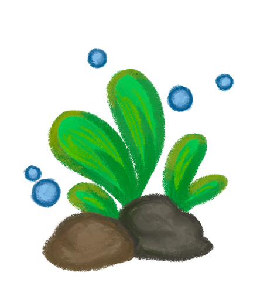

How to use this page
This page is organized around the same care areas covered in the readiness quiz. If a result page or saved PDF links you here, it should take you to the most relevant topic or subtopic.
Open a main topic for a general overview, then open the smaller sections inside it for more specific help. The goal of this page is to break betta care into smaller pieces so it feels more manageable.
Tank Size & Basic Setup
A betta’s tank size affects almost everything else about its care. A tank that is too small gets dirty faster, changes temperature more easily, and gives the fish less room to swim and explore. In general, a 5-gallon tank is the minimum recommended size for one betta, while larger tanks are usually easier to keep stable. A better setup is not just about looks. It affects comfort, health, and how much maintenance the tank will need.
- Larger tanks are usually more stable than tiny ones.
- Bettas need room to swim, rest, and explore.
- Tank size also affects what equipment can be used safely and effectively.
Tank Sizes & Planning
A 5-gallon tank is usually considered the minimum size for a single betta. Anything smaller tends to be harder to heat, clean, and keep stable. Small tanks may seem easier at first, but they often create more problems because waste builds up faster and temperature changes more quickly. If possible, going a little larger can make care easier and give the fish a better quality of life.
Kinds of Tanks
Glass and acrylic tanks can both work, but the most important thing is that the tank is a practical shape and size. Longer tanks are usually better than very tall ones because they give the fish more horizontal swimming space. Some aquarium kits are convenient because they include a lid, filter, and light, but the included equipment is not always ideal for bettas. Betta-branded tanks are often too small, so it is worth checking the actual size and setup instead of just trusting the label.
Lids & Tank Safety
A lid is an important part of a betta setup because bettas can jump. A lid also helps keep the air above the tank warmer and more stable, which matters because bettas sometimes breathe from the surface. Any openings around cords or filters should still be small enough to keep the fish from escaping. A safe tank should protect the fish, not just hold water.
Where to Get Supplies
Supplies can come from pet stores, aquarium stores, or online shops. A beginner should try to get the basic setup ready before bringing the fish home, including the tank, heater, filter, thermometer, conditioner, and test kit. Used tanks can sometimes be fine, but they should be checked carefully for cracks, leaks, or broken equipment. It is better to plan the setup first than to buy the fish and scramble afterward.
Basic Equipment Checklist
Before getting a betta, the basic setup should already be in place. At minimum, that usually includes the tank and the equipment needed to keep the water safe and warm.
- Tank
- Lid
- Filter
- Heater
- Thermometer
- Water conditioner
- Test kit
- Food
- Siphon or gravel vacuum
- Bucket
- Plants, hides, or smooth decor
Budget & Ongoing Costs
The first cost of a betta is not just the fish. A proper setup also includes the tank and equipment, and those start-up costs can add up quickly. After that, there are still ongoing costs like food, conditioner, replacement supplies, and electricity for heaters or lights. Cheap setups can look appealing at first, but they often leave out things the fish actually needs. Planning for both the first purchase and regular care makes it easier to avoid problems later.
Topic References
- Seriously Fish: Betta splendens
- Fishkeeping.co.uk: Fishless Cycling Article
- r/bettafish care sheet
Water Quality & Cycling
Clear water is not always safe water. A tank can look fine and still have harmful waste in it. Good betta care depends on treating tap water properly, cycling the tank, testing the water, and paying attention to early warning signs before a problem gets worse.
Making Tap Water Safe
Tap water usually contains chlorine or chloramine, which are added to make water safe for people but can harm fish. Water conditioner is used to treat tap water before it goes into the tank. This needs to be done every time new water is added, not just once. Safe-looking water is not automatically fish-safe unless it has been treated.
Tank Cycling
Cycling is the process of building up helpful bacteria that break down fish waste. Without those bacteria, ammonia and nitrite can build up and harm the fish. A tank is not ready just because it has water in it. It becomes safer over time when the biological cycle is established and the tank can process waste more effectively.
Planning a Fishless Cycle
A fishless cycle means setting up and cycling the tank before the betta is added. This is usually the safest way to prepare because it gives the tank time to build its bacteria without exposing the fish to unstable water conditions. It takes patience, but it makes the setup healthier from the start. Doing this before buying the fish can prevent a lot of stress later.
Water Testing
Water testing matters because harmful problems are not always visible. A tank can look clear while ammonia or nitrite is still present. Testing helps you understand what is actually happening in the water instead of guessing based on appearance. For a beginner, this is one of the most useful tools for preventing problems early.
Test Strips & Liquid Test Kits
Both strips and liquid kits are used to test aquarium water, but liquid test kits are usually considered more accurate and reliable. Test strips are quicker and more convenient, but they can be less detailed. A good beginner setup should include some way to test the water regularly, especially while the tank is new or still cycling. Convenience helps, but accuracy matters too.
Recognizing Water Problems Early
Water problems often show up in behavior before they show up in the tank itself. A betta may become lethargic, clamp its fins, lose color, or stop eating before the water looks different. That is why regular testing and observation matter. It is easier to fix a problem early than to wait until the fish is clearly sick.
Topic References
- Fishkeeping.co.uk: Fishless Cycling Article
- r/bettafish care sheet
- Seriously Fish: Betta splendens
Tank Environment, Substrate, Plants, & Decor
The tank environment shapes the fish’s everyday experience. A betta needs more than water and a container. Substrate, plants, hides, and filter choice all affect safety, comfort, movement, and enrichment.
Substrate Choices
Substrate is the material placed on the bottom of the tank, such as gravel or sand. It can affect cleaning, plant growth, and the overall look of the aquarium. Some setups also use a bare-bottom tank, but many people prefer substrate because it looks more natural and supports planted tanks better. The best choice depends on whether the tank will have live plants and how simple or detailed the setup needs to be.
Live Plants, Silk Plants, & Planting Choices
Plants help make a betta tank feel more secure. They provide cover, resting places, and shade, which many bettas seem to enjoy. Live plants and silk plants are both safer choices than hard plastic plants, which can tear fins. Live plants can also make the tank feel more natural, but they may need more planning than silk plants.
Safe Decorations & Hiding Places
Decor should make the tank safer and more comfortable, not just more decorative. Bettas usually appreciate hiding places and areas near the surface where they can rest. Any decoration with sharp edges or very small holes can be risky because fins can tear and fish can get stuck. A simple safety check is to avoid anything rough, jagged, or cramped.
Choosing a Filter
A filter helps keep water moving and supports the biological cycle, but bettas do not usually do well with very strong flow. Gentle filtration is usually the better choice. Sponge filters and adjustable filters are often recommended because they can keep the water cleaner without pushing the fish around too much. The goal is a cleaner, more stable tank, not a strong current.
Catappa Leaves & Tannins
Catappa leaves, also called Indian almond leaves, are sometimes added to betta tanks because they release tannins into the water. Tannins can tint the water brown and may make the tank feel more natural for the fish. Some keepers also use them for extra cover and mild support during stress. They are optional, not required, but they can be useful if someone wants a more natural-style setup.
Topic References
- r/bettafish care sheet
- Seriously Fish: Betta splendens
- Collected planted tank and decor notes
Responsibility, Motivation, & Readiness Mindset
Having the right supplies matters, but so does mindset. A betta is a living animal, not a decoration or a short-term novelty. The way someone thinks about the fish affects how seriously they prepare and how well they follow through.
Why Motivation Matters
The reason someone wants a betta fish can shape the whole setup. If the fish is treated like a decoration or an impulse purchase, important parts of care are easier to ignore. If the fish is seen as a living animal that depends on human choices, people are usually more willing to plan properly and keep up with regular care. Good care starts before the fish is even brought home.
The “Starter Pet” Mindset
Bettas are often described as easy or low-maintenance pets, which can be misleading. They may be small, but they still need heat, clean water, regular maintenance, and proper food. Calling them a “starter pet” can make people underestimate how much setup and routine care they actually need. Small does not mean no work.
Planning Beyond the First Purchase
Readiness is not just about buying the fish and the tank. It also means thinking about regular maintenance, future costs, and what to do if something goes wrong. Bettas can live for years with proper care, so this is not just a one-time purchase. Long-term care means ongoing attention, not just a good first impression.
Respect for the Animal
Respect for the animal shows up in everyday choices. It means giving the fish enough space, keeping the water safe, paying attention to behavior, and avoiding the mindset that the fish can just “survive” anywhere. A betta depends completely on its owner for its environment. Responsible care begins with taking that seriously.
Topic References
- Seriously Fish: Betta splendens
- r/bettafish care sheet
- Collected care notes
Temperature & Heating
Bettas are tropical fish, so warm and stable water is part of basic care. Room temperature alone is usually not enough, especially in smaller tanks where temperature can change quickly. Heating should be part of the plan from the beginning, not something added only after problems appear.
Heating & Temperature Stability
Bettas are generally most comfortable in warm water around 78 to 80°F. Water that is too cold can make them sluggish and stressed, while sudden temperature swings can also cause problems. Because tanks are often cooler than the room around them, a heater is usually necessary. Stable temperature matters more than guesswork.
Using a Thermometer
A thermometer helps confirm what the water temperature actually is. Even if a heater is installed, it still helps to check that the temperature is staying where it should be. This is especially useful during setup and water changes. A thermometer turns assumptions into something you can actually check.
Topic References
- r/bettafish care sheet
- Collected heater and thermometer notes
- Seriously Fish: Betta splendens
Maintenance & Water Changes
Maintenance is part of normal betta care. It should not only happen when the tank looks dirty or when the fish already seems stressed. A steady routine helps keep the environment safer and makes small problems easier to catch.
Regular Maintenance
Regular maintenance includes checking temperature, watching the fish, making sure equipment is working, and doing routine cleaning and water changes. Weekly tasks often include testing water, cleaning waste from the substrate, and checking the filter. Daily observation also matters because behavior changes can be an early sign that something is wrong.
Partial Water Changes
A partial water change means removing part of the old water and replacing it with clean, treated water. This helps reduce waste and keep the tank stable without completely disrupting the setup. In many tanks, small regular changes are more useful than waiting and doing something dramatic later. Water changes are a normal part of care, not a sign that something failed.
Preparing New Water Correctly
New water should be treated with conditioner before it is added to the tank. It also helps if the replacement water is close to the same temperature as the tank water, since sudden changes can stress the fish. Water changes are not just about taking water out. The new water matters just as much as the old water you remove.
Checking Heaters, Filters, & Other Equipment
Maintenance also means checking whether equipment is still doing its job. A heater can fail, a filter can clog, and cords or lights can have problems. Looking over the setup regularly makes it easier to catch issues before they turn into bigger ones. Equipment should not just be installed and forgotten.
Keeping Extra Supplies Ready
Extra supplies can make a big difference during an emergency. It helps to have backup water conditioner, food, test supplies, and basic tools ready in case something runs out or something in the tank stops working. Some keepers also keep a spare heater or container for temporary use. Planning ahead makes stressful situations easier to handle.
Topic References
- Collected maintenance and water change notes
- r/bettafish care sheet
- Fishkeeping.co.uk: Fishless Cycling Article
Feeding, Health, & Emergency Care
Care does not stop once the tank is set up. Bettas still need a good feeding routine, regular observation, and some basic emergency planning. Small changes in behavior or appearance can be early signs that the fish needs help.
Feeding Basics
Bettas should be fed regularly, but not heavily. Overfeeding can lead to waste buildup in the tank and can also affect the fish’s health. A small amount fed once or twice a day is usually more appropriate than dumping in extra food. Feeding should be part of a routine, not something random.
Choosing Food
Bettas are carnivorous and do better on foods that are high in animal-based protein. A good staple food is usually a betta pellet with fish or shrimp-based ingredients near the top of the list. Variety can also help, such as occasional brine shrimp or daphnia. Price and convenience do not always mean quality, so it helps to check ingredients instead of just the label.
Watching for Signs of Illness or Stress
Part of caring for a betta is paying attention to changes in how it looks or acts. Lethargy, clamped fins, pale color, ragged fins, reduced appetite, or unusual swimming can all signal stress or illness. These signs do not always mean a specific disease right away, but they do mean the fish should be checked more carefully. Observation is one of the easiest tools a keeper has.
What to Do if the Fish Seems Sick
If a betta seems sick, one of the first things to check is the water. Poor water quality can cause or worsen many common problems. It also helps to check temperature, watch for recent changes in behavior, and look for visible damage or odd spots. Acting early is useful, but randomly adding treatments without checking the basics first can make things more confusing.
Hospital or Quarantine Planning
Some keepers prepare a separate container or simple quarantine setup in case a fish becomes sick or the main tank has a problem. This does not need to be elaborate. The point is to have a safe temporary place available if treatment, observation, or a tank emergency makes it necessary. A little planning here can make a stressful situation much easier to manage.
Topic References
- r/bettafish care sheet
- Collected disease and feeding notes
- Seriously Fish: Betta splendens
All References
These are the main sources used to help shape the information on this page.
- Seriously Fish. Betta splendens.
- Fishkeeping.co.uk. Fishless Cycling Article.
- Reddit r/bettafish. Betta Care Sheet.
- Collected notes on betta supplies, maintenance, food, plants, and common health issues.